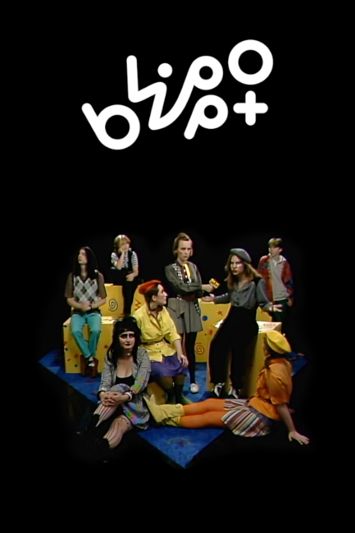

Blippo+
Every archived year-end list appearance, including placement and points earned.
About the Game
Congratulations! Blippo+ is now available in your area. Blippo+ is a live-action, new wave, off-cable TV simulator. Channel-surf the stars and discover the staticky, radical world of Planet Blip through its soaps, sitcoms, news, weather, and talk shows. But don’t touch that remote—because everything’s about to get bent. Planet Blip is brought to life through a cast of lovable characters, vibrant costumes and makeup, original music, extensive lore, and writing that pays homage to the offbeat, idiosyncratic, and often-forgotten margins of TV history, from pirate television and cable access to public broadcasting and video art. Whether you’re a punk, new waver, sproinger or a bender: there’s something for you on Blippo+.Features:Channel-surf your way through a wide variety of funny, freaky, and wholly original live-action programs on the Blippo+ Electronic Program Guide!Fall in love with a diverse cast of alien TV personalities, from cloned soap opera stars and spooky raconteurs to mad professors, quizmasters, scientists, and action sheroes. Immersive yourself in Blippo+ to unlock data packettes, update the Electronic Program Guide with new episodes and messages, and piece together the planet-shaking story unfolding between the channels.Expand your knowledge of Blippian culture by lurking the Femtofax “videotext” forums.Fiddle with extensive TV settings to personalize your Blippo+ experience.Enjoy a genre-spanning original soundtrack by Grammy-nominated composers Rob Kieswetter and Jona Bechtolt of YACHT.
| Released | 2025-09-23 |
|---|---|
| Developer | Noble Robot, YACHT, Telefantasy Studios |
| Publisher | Panic |
| Genres | Casual, Indie |
| Platforms | PC |
SingleplayerFull controller supportSteam CloudStory RichSci-fiFunnyComedyPixel GraphicsCaptions availableRealisticCinematicSurreal
Where to Buy
Game information provided by RAWG.
Points by Year
List History
| Year | Source | List | Placement | Points |
|---|---|---|---|---|
| 2025 | Forbes | The 20 Best Games Of 2025 | 20 | 3 |
| 2025 | Inverse | The 25 Best Games Of 2025, Ranked | 21 | 3 |
| 2025 | Kotaku | The 12 Best Video Games Of 2025 | 9 | 5 |
| 2025 | Polygon | The 50 best games of 2025, as chosen by Polygon | 48 | 1 |